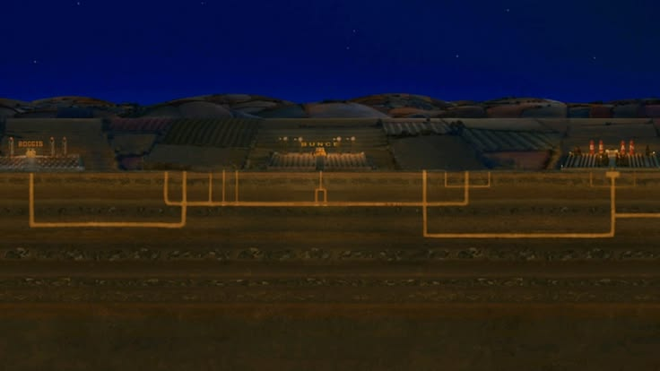

ESPACIO 05 / LA ESCAPATORIA
PERDERSE
PARA ESCAPAR.
Un laberinto de rutas alternativas, giros inesperados y decisiones rápidas. Aquí la creatividad abre caminos.
ENTRAR AL LABERINTO ↘
DENTRO DE LA HISTORIA
Los túneles conectan distintos lugares y permiten a los animales encontrar rutas para escapar. Representan la imaginación y la capacidad de resolver problemas cuando las opciones parecen agotarse.
A veces, la mejor salida es encontrar un camino nuevo.
En este recorrido virtual, los túneles también representan la navegación entre páginas. Puedes explorar libremente, avanzar al siguiente lugar o regresar al inicio cuando quieras.
ÚLTIMA PISTA ✳
Has llegado al último espacio. Toca las letras para activar
el audio y después vuelve al inicio para elegir otra ruta.
ACTIVA LAS LETRAS